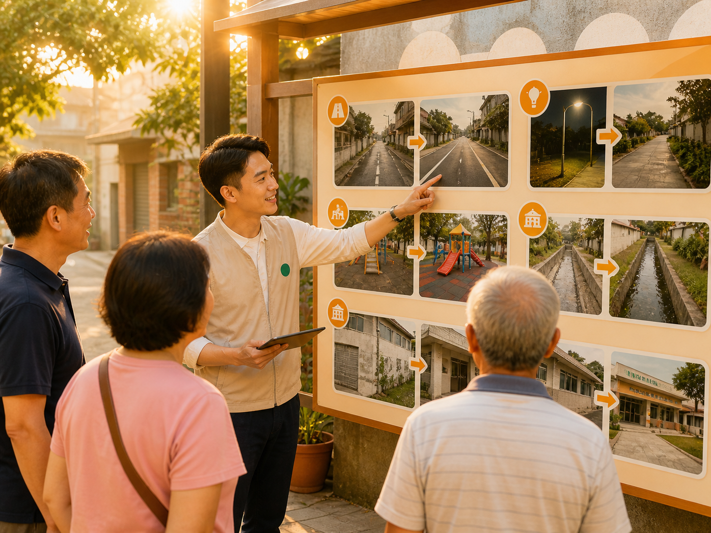
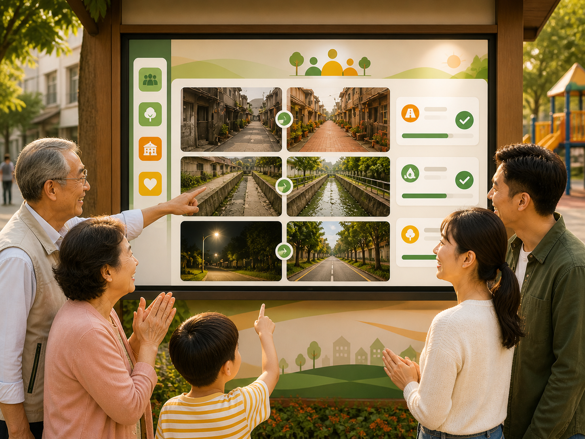
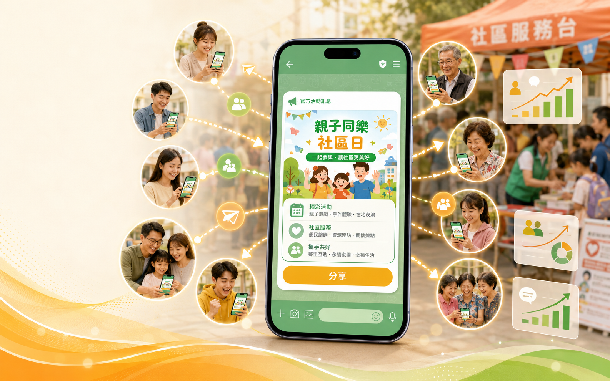
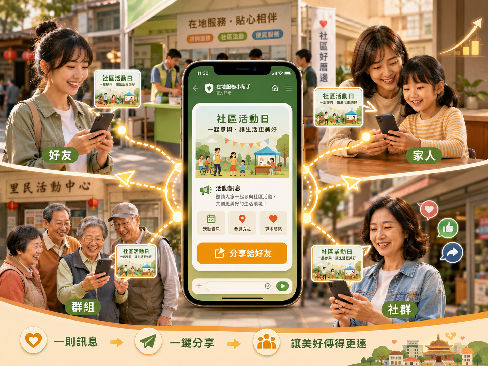
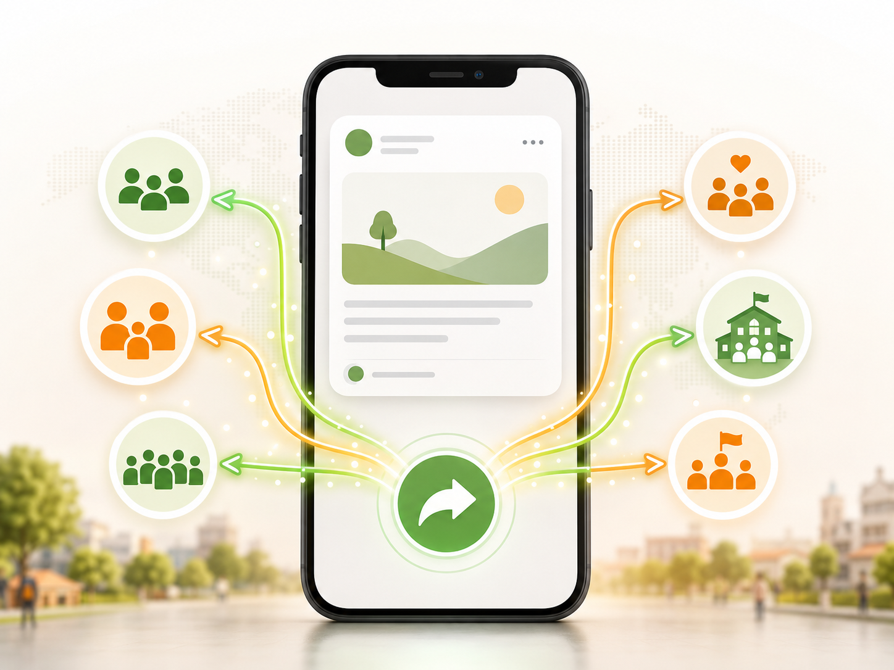
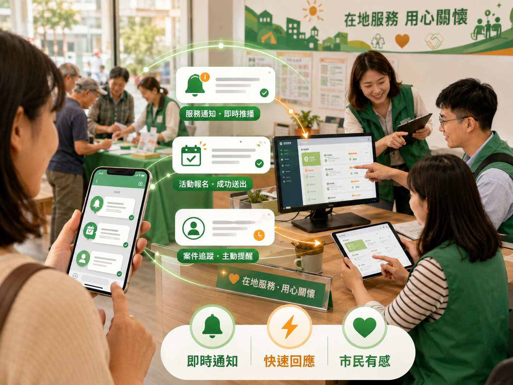
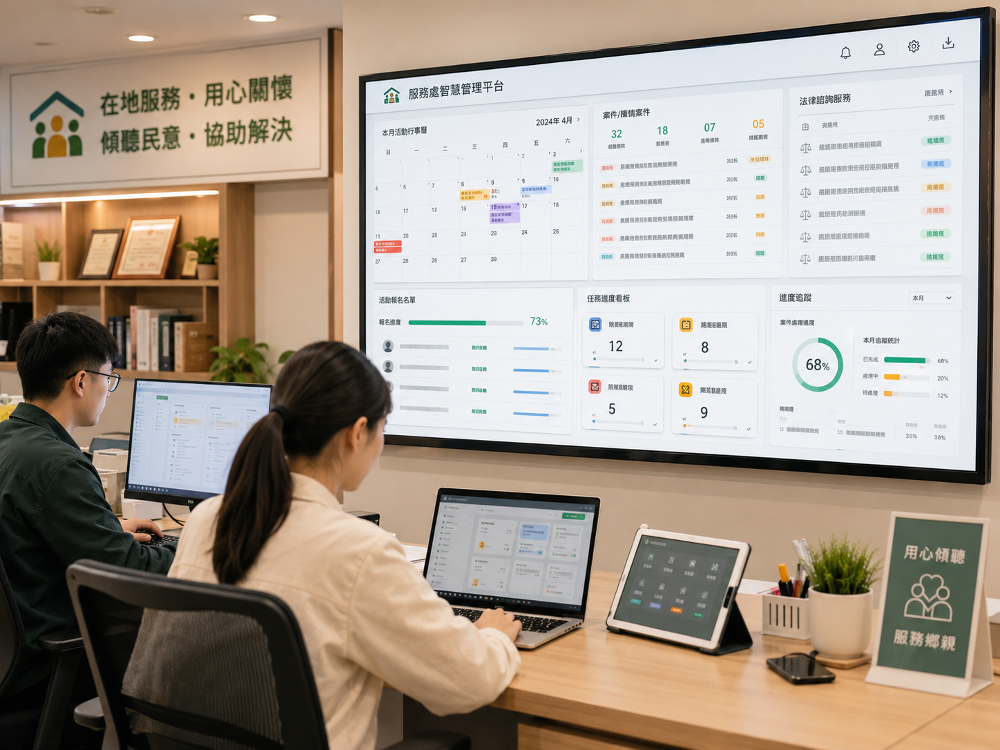
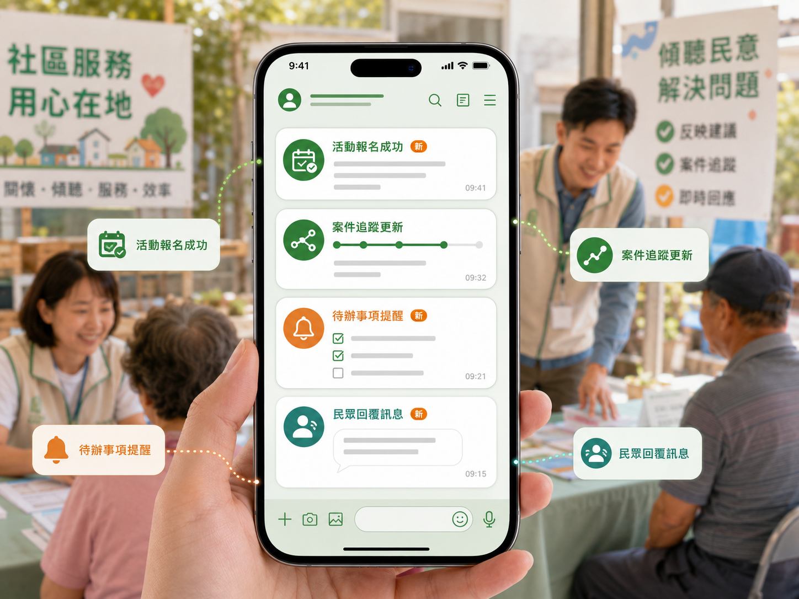

把服務變成民眾看得見的成果
把民眾最常遇到的等待、詢問、錯過與不確定，變成能查、能傳、能分工、能累積的服務體驗。
從一則需求，到一個被看見的成果
需求被接住
民眾不用重複說明
團隊接得住
誰處理、做到哪裡都清楚

C成果被看見
服務留下紀錄，也累積信任
先讓一項服務被民眾看見
從陳情、活動推播或成果展示開始。
先看最有感的服務成果
用居民看得懂的照片、時間與處理重點，把地方服務成果快速呈現。
四個步驟，讓您的問題被看見、被解決


成果卡片牆
用圖片、標籤、標題與摘要讓民眾快速掃描重點。
分類篩選
會勘、質詢、提案與地方建設可分開瀏覽。
成果詳情
補上處理過程、成果說明與相關圖片。

解決什麼問題
官方訊息不再只能被動接收。民眾收到活動、服務或政策圖卡後，可以快速分享給好友、家人、群組與社群，宣傳不再受到推播次數與費用限制。

民眾收到官方圖卡後，可以直接轉發，不再只是單向接收訊息。
活動與服務資訊可以分享給個人好友、家人與熟識民眾，傳遞更自然。
同一則官方訊息能被轉到群組與社群，讓適合的人更快看見。
宣傳不只靠服務處推播，民眾自發分享能降低觸及限制與推播成本。
功能特色
重點不是學系統，而是讓官方訊息更快被分享、更容易被看見。

01一鍵快速分享
不受群組、個人、費用限制。民眾看到官方 LINE 圖卡後，可以直接轉發給好友、家人或社群，讓活動自然擴散。
無須學習快速上架
提供簡易的操作介面，把活動主題、圖片與按鈕整理成可分享訊息，服務處立刻就能上架並推播。
數位服務處
人力流程變成數位工作台
服務處每天接到的活動、陳情、諮詢與回覆，不再只靠紙本紀錄或幕僚記憶。系統把每一件服務整理成可查詢、可分派、可交接的資料，讓團隊一打開後台就知道今天要處理什麼。
- 服務資料集中，不再散落在不同人手上。
- 負責人、狀態、日期與內容都能留下紀錄。
- 交接時不用重新翻群組與紙本資料。
24H即時處理
LINE 收到就能分流
民眾習慣用 LINE 詢問、報名與接收通知，系統把 LINE 作為服務入口，讓服務處能即時掌握民眾需求。訊息不只是被看見，也能轉成名單、任務或案件，後續處理不再斷線。
- LINE 入口符合民眾使用習慣，溝通更自然。
- 報名、會員、活動與案件能被整理成資料。
- 幕僚可以即時看到新需求並接續處理。

數位管理
資料好找，進度好追
活動、日曆、法扶諮詢、報名名單與陳情案件都能在後台留下清楚資料。服務處不需要靠人力反覆整理 Excel 或翻聊天紀錄，就能掌握每個服務節點。
- 活動日曆協助掌握月份安排與現場任務。
- 報名名單可同步整理民眾資料與狀態。
- 案件與諮詢紀錄能被分類、查詢與追蹤。


手機也能用
外出服務也能即時掌握
民代與幕僚不一定都坐在辦公室。手機介面讓活動、名單、案件與提醒可以在外出拜訪、活動現場或會勘時快速查看，LINE 通知也能把重要事件即時帶到手上。
- 手機查看今日活動與待處理事項。
- 活動現場即時確認報名與同行人數。
- LINE 通知協助幕僚掌握新案件與提醒。
看得到的服務入口
不是用文字介紹系統，而是直接讓民眾進入可以使用、可以查看、可以分享的服務頁面。